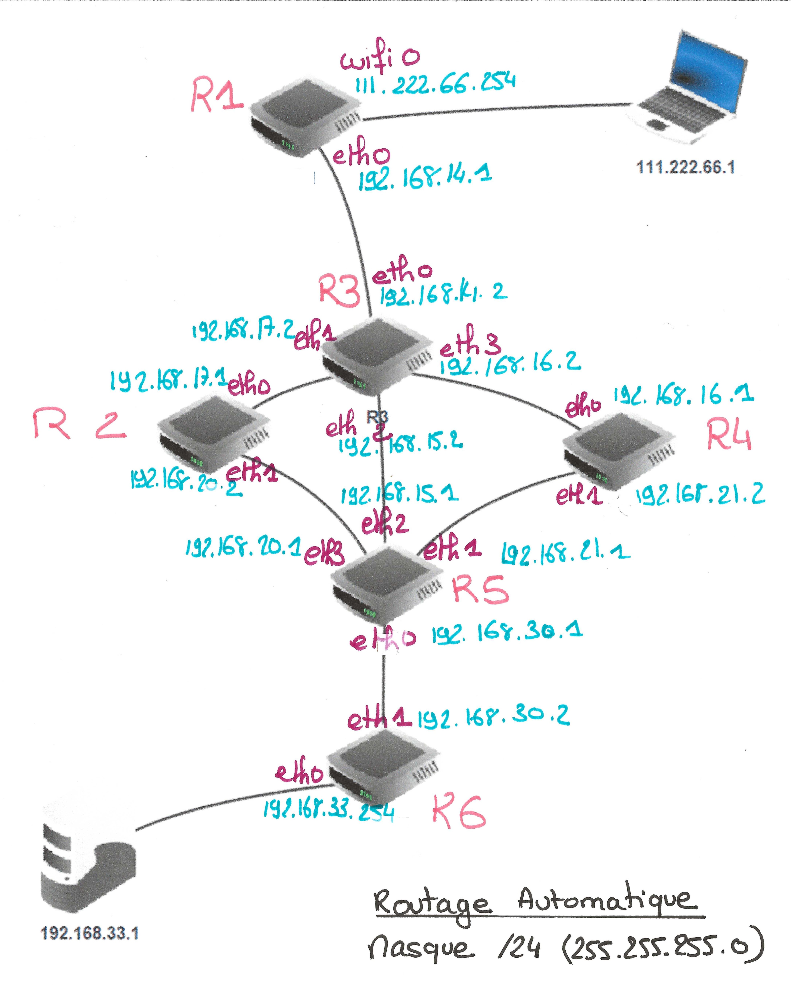

Protocoles de routage⚓︎


Crédits
0. Résumé des épisodes précédents⚓︎
- cours de 1ère sur l'architecture d'un réseau
- cours de 1ère sur les différents protocoles de communication dans un réseau.
Notions essentielles 
Lorsqu'une machine A, d'adresse IP_A veut discuter avec une machine B, d'adresse IP_B :
- La machine A calcule (grâce au masque de sous-réseau) si B est dans le même sous-réseau qu'elle, ou pas.
- Si oui, elle peut donc connaître l'adresse MAC de la carte réseau de la machine B (soit elle la possède déjà dans sa table ARP, soit elle la demande en envoyant un message de broadcast à tout le sous-réseau : «qui possède cette adresse IP_B ?»). Elle envoie donc dans le sous-réseau une trame ayant pour entête l'adresse MAC de B : le switch lit cette trame, sait sur quel port est branché la machine B et lui envoie spécifiquement donc le message.
- Si B n'est pas dans le même sous-réseau que A, A mettra en entête de sa trame l'adresse MAC de la carte réseau du routeur, qui joue le rôle de passerelle. Le routeur va ouvrir la trame et va observer l'IP_B, à qui il doit remettre ce message. C'est maintenant que vont intervenir les protocoles de routage :
- est-ce que B est dans le même sous-réseau que le routeur ?
- est-ce que B est dans un autre sous-réseau connu du routeur ?
- est-ce que B est totalement inconnu du routeur ?
Ces questions trouveront des réponses grâce à table de routage du routeur.
Regarder la vidéo suivante sur les notions de routage : ici
1. Tables de routage⚓︎

Les tables de routage sont des informations stockées dans le routeur permettant d'aiguiller intelligemment les données qui lui sont transmises.
Dans le réseau ci-dessus, si l'ordinateur d'adresse 192.168.0.5 veut interroger le serveur 10.7.3.8 :
- l'adresse
10.7.3.8n'étant pas dans le sous-réseau F (d'adresse192.168.0.0 / 24), la requête est confiée au routeur via son adresse passerelle dans le réseau F (ici192.168.0.254). - le routeur observe si l'IP recherchée appartient à un autre des sous-réseaux auquel il est connecté. Ici, l'IP recherchée
10.7.3.8n'appartient ni au sous-réseau A ou E. - le routeur va donc regarder dans sa table de routage l'adresse passerelle d'un autre routeur vers qui elle doit rediriger les données. Si le sous-réseau C fait partie de sa table de routage, le routeur R1 saura alors que le meilleur chemin est (par exemple) de confier les données au routeur R3.
- si le sous-réseau C ne fait pas partie de la table de routage, le routeur R1 va alors le rediriger vers une route «par défaut» (que l'on peut assimiler au panneau «toutes directions» sur les panneaux de signalisation).
interface et passerelle
Les tables de routage des routeurs font très souvent apparaître deux colonnes, interface et passerelle, dont il ne faut pas confondre l'utilité :
-
interface : c'est l'adresse IP de la carte réseau du routeur par où va sortir le paquet à envoyer. Il y a donc toujours une adresse d'interface à renseigner (car un paquet sort bien de quelque part !). Parfois cette interface sera juste nommée interface1 ou interface2.
-
passerelle : c'est l'adresse IP de la carte réseau du routeur à qui on va confier le paquet, si on n'est pas capable de le délivrer directement (donc si l'adresse IP de destination n'est pas dans notre propre sous-réseau). Cette adresse de passerelle n'est donc pas systématiquement mentionnée. Quand elle l'est, elle donne le renseignement sur le prochain routeur à qui le paquet est confié.
Exemple: table de routage du routeur R1
| Destination | Interface | Passerelle |
|---|---|---|
| F | 192.168.0.254 | |
| A | 10.0.5.152 | |
| E | 172.17.1.254 | |
| B | 172.17.1.254 | 172.17.1.123 |
| C | 10.0.5.152 | 10.0.5.135 |
Les trois réseaux F, A et E sont directement accessibles au routeur R1, puisqu'il en fait partie : il n'a donc pas besoin d'adresse passerelle pour communiquer avec ces réseaux.
Par contre, la communication avec le réseau B nécessite de confier le paquet au routeur R2 (c'est le choix de cette table de routage). Il faut donc mentionner l'adresse IP de ce routeur R2 (172.17.1.123), qu'on appelle adresse de passerelle.
De la même manière, la communication avec le réseau C nécessite de confier le paquet au routeur R3 (c'est le choix de cette table de routage). Il faut donc mentionner l'adresse IP de ce routeur R3 (10.0.5.135).
Comment sont construites les tables de routage ?⚓︎
- Soit à la main par l'administrateur réseau, quand le réseau est petit : on parle alors de table statique.
- Soit de manière dynamique : les réseaux s'envoient eux-mêmes des informations permettant de mettre à jour leurs tables de routages respectives. Des algorithmes de détermination de meilleur chemin sont alors utilisés : nous allons en découvrir deux, le protocole RIP et le protocole OSPF.
2. Le protocole RIP⚓︎
Le Routing Information Protocol est basé sur l'échange (toutes les 30 secondes) des tables de routage de chaque routeur. Au début, chaque routeur ne connaît que les réseaux auquel il est directement connecté, associé à la distance 1.
Ensuite, chaque routeur reçoit périodiquement la table des réseaux auquel il est connecté, suivant les règles ci-dessous :
les règles du protocole RIP
-
s'il découvre une route vers un nouveau réseau inconnu, il l'ajoute à sa table en augmentant de 1 la distance annoncée par le routeur qui lui a transmis sa table.
-
s'il découvre une route vers un réseau connu mais plus courte (en rajoutant 1) que celle qu'il possède dans sa table, il actualise sa table.
-
s'il découvre une route vers un réseau connu mais plus longue que celle qu'il possède dans sa table, il ignore cette route.
-
s'il reçoit une route vers un réseau connu en provenance d'un routeur déjà existant dans sa table, s'il met à jour sa table car la topologie du réseau a été modifiée.
-
si le réseau n'évolue pas (panne ou ajout de nouveau matériel), les tables de routage convergent vers une valeur stable. Elles n'évoluent plus.
-
si un routeur ne reçoit pas pendant 3 minutes d'information de la part d'un routeur qui lui avait auparavant communiqué sa table de routage, ce routeur est considéré comme en panne, et toutes les routes passant par lui sont affectées de la distance infinie : 16.
Remarques et inconvénients:
-
Le protocole RIP n'admet qu'une distance maximale égale à 15 (ceci explique que 16 soit considéré comme la distance infinie), ce qui le limite aux réseaux de petite taille.
-
Chaque routeur n'a jamais connaissance de la topologie du réseau tout entier : il ne le connaît que par ce que les autres routeurs lui ont raconté. On dit que ce protocole de routage est du routing by rumor.
-
La métrique utilisée (le nombre de sauts) ne tient pas compte de la qualité de la liaison, contrairement au protocole OSPF.
Application :
Considérons le réseau suivant qui relie deux réseaux d'une entreprise :
- Le réseau 1 contient des postes de travail dans un bureau.
- Le réseau 2 contient un serveur dans un centre de données.
Image du schéma réseau : 
Maquette Filius Télécharger 
Les routeurs R1 et R6 permettent d'accéder au réseau de l'entreprise, R2, R3, R4 et R5, des routeurs internes au réseau. Nous allons nous intéresser à l'évolution des tables de routage des routeurs R1 et R3 sur lesquels on a activé le protocole RIP.
Étape 0⚓︎
Au démarrage, les routeurs R1 et R3 ne connaissent que leurs voisins proches. Leurs tables peuvent donc ressembler à ceci :
Pour R1 :
| destination | passerelle | interface | Nb sauts | remarques |
|---|---|---|---|---|
| 111.222.66.0 | wifi0 | 1 | ==> vers les postes de travail | |
| 192.168.14.0 | eth0 | 1 | ==> vers R3 |
Au départ, R1 ne peut atteindre que ses voisins immédiats (nb Sauts vaut 1). Aucune passerelle n'est nécessaire puisque la communication est directe. Chaque sous réseau utilise une interface spécifique. Le réseau local 1 contenant les postes de travail est accessible en wifi. En ce qui concerne le routeur 3, celui-ci possède 4 interfaces réseau filaires, que nous nommerons eth0-3 qui permettent d'atteindre les routeurs immédiats (R1, R2, R4 et R5). Voici à quoi peut ressembler sa table de routage au démarrage :
Pour R3 :
| destination | passerelle | interface | Nb sauts | remarques |
|---|---|---|---|---|
| 192.168.14.0 | eth0 | 1 | ==> vers R1 | |
| 192.168.17.0 | eth1 | 1 | ==> vers R2 | |
| 192.168.15.0 | eth2 | 1 | ==> vers R5 | |
| 192.168.16.0 | eth3 | 1 | ==> vers R4 |
Étape 1⚓︎
Au bout de 30 secondes, un premier échange intervient avec les voisins immédiats de chacun des routeurs. Le principe de l'algorithme Lorsqu'un routeur reçoit une nouvelle route de la part d'un voisin, 4 cas sont envisageables :
- Il découvre une route vers un nouveau réseau inconnu > Il l'ajoute à sa table.
- Il découvre une route vers un réseau connu, plus courte que celle qu'il possède dans sa table > Il actualise sa table.
- Il découvre une route vers un réseau connu, plus longue que celle qu'il possède dans sa table > Il ignore cette route.
- Il reçoit une route vers un réseau connu en provenance d'un routeur déjà existant dans sa table > Il met à jour sa table car la topologie du réseau a été modifiée.
En appliquant ces règles, voici la table de routage de R1 après une étape :
| destination | passerelle | interface | Nb sauts | remarques |
|---|---|---|---|---|
| 111.222.66.0 | wifi0 | 1 | ==> vers les postes de travail | |
| 192.168.14.0 | eth0 | 1 | ==> vers R3 | |
| 192.168.17.0 | 192.168.14.2 | eth0 | 2 | Ces 3 routes |
| 192.168.15.0 | 192.168.14.2 | eth0 | 2 | proviennent |
| 192.168.16.0 | 192.168.14.2 | eth0 | 2 | de R3 |
192.168.14.2 est l'adresse de la passerelle de sortie du routeur R3. On ajoute à la table précédente les réseaux atteignables par R3. On pense cependant à ajouter 1 au nombre de sauts ! Si R1 veut atteindre le réseau 192.168.16.0, il s'adressera à R3 et atteindra le réseau cible en 2 sauts.
Voici la table de R3 qui s'enrichit des informations envoyées par R1 afin d'atteindre le réseau local, mais aussi des informations en provenance de R2, R4 et R5. Il découvre ainsi 4 nouveaux réseaux.
| destination | passerelle | interface | Nb sauts | remarques |
|---|---|---|---|---|
| 192.168.14.0 | eth0 | 1 | ==> vers R1 | |
| 192.168.17.0 | eth1 | 1 | ==> vers R2 | |
| 192.168.15.0 | eth2 | 1 | ==> vers R5 | |
| 192.168.16.0 | eth3 | 1 | ==> vers R4 | |
| 111.222.66.0 | 192.168.14.2 | eth0 | 2 | reçu de R1 |
| 192.168.17.0 | 192.168.17.2 | eth1 | 2 | reçu de R2 |
| 192.168.15.0 | 192.168.15.2 | eth2 | 2 | reçu de R5 |
| 192.168.21.0 | 192.168.16.2 | eth3 | 2 | reçu de R4 |
Étape 3⚓︎
Comme vous le voyez, les tables deviennent vite longues et énumérer dans le détail chacune d'elle est trop long. On va donc passer directement à l'étape finale : l'étape 3.
Voici ce que contient la table de routage de R1 :
| destination | passerelle | interface | Nb sauts | remarques |
|---|---|---|---|---|
| 192.168.1.0 | wifi0 | 1 | ==> vers les postes de travail | |
| 192.168.14.0 | eth0 | 1 | ==> vers R3 | |
| 192.168.17.0 | 192.168.14.2 | eth0 | 2 | Ces 3 routes |
| 192.168.15.0 | 192.168.14.2 | eth0 | 2 | proviennent |
| 192.168.16.0 | 192.168.14.2 | eth0 | 2 | de R3 |
| 192.168.30.0 | 192.168.14.2 | eth0 | 3 | obtenu à l'étape 2 |
| 192.168.33.0 | 192.168.14.2 | eth0 | 4 | obtenu à l'étape 3 |
Comme vous le voyez, le routeur R1 est à présent en capacité d'acheminer un paquet du poste de travail du réseau 1 vers le serveur se trouvant dans le réseau 2.
Détection des pannes Le protocole RIP est en mesure de détecter des pannes : Si un routeur ne reçoit pas d'information de la part d'un de ses voisins au bout d'un temps de l'ordre de 3 minutes (configurable) il va considérer que ce lien est mort et en informer ses voisins en indiquant un nombre de sauts égal à 16. Puisque RIP ne gère que 15 sauts au maximum, 16 peut être considéré comme une distance infinie. De cette manière, les voisins vont pouvoir recalculer leurs routes en conséquence en évitant le lien qui est tombé.
Détection des boucles RIP implémente d'autres mécanismes pour empêcher que se forment des boucles de routage. Une boucle est par exemple une route du type R2 -> R3 -> R5 -> R2. Des exemples de tels mécanismes sont :
- Une durée de vie limitée sur les paquets (TTL) afin qu'un paquet qui tourne en rond soit détruit
- Ne pas renvoyer une information vers un routeur si celle-ci est déjà passée par ce routeur
A vous de jouer : Élaborez au fil du temps la table de routage du routeur R4 de manière similaire à ce que l'on vient de faire.
Exercice type BAC
Exercice 1 Partie A du sujet Polynésie J1 2024
Q1
Il reste un octet soit 8 bits pour l’adresse réseau (1re adresse), les machines et l’adresse de broadcast (dernière adresse). Ainsi le réseau peut accueillir : \(2^8 – 2 = 254\) machines.
Q2
Conversion décimal – binaire :
\(217_{(10)} = 128 +64+16+8+1 = 1101 1001_{(2)}\)
Q3
Conversion binaire – décimal :
$110010_{(2)} = 32 + 16 + 2 = 50_{(10)}
Q4
L’adresse du sous-réseau de la machine 110.217.53.22/24 est 110.217.53.0 donc cette machine n’appartient pas au réseau pédagogique 2.
[Le réseau pédagogique 2 (110.217.52.0/24) admet une plage d’adresse de 110.217.52.0 à 110.217.52.255.]
Q5

Q6

Q7
Le nombre de saut étant identique, aucune modification n’est nécessaire dans la table de routage du routeur R2.
3. Le protocole OSPF⚓︎
OSPF : Open Shortest Path First
Un inconvénient majeur du protocole précédent est la non-prise en compte de la bande passante reliant les routeurs.

principe fondamental du protocole OSPF
Le chemin le plus rapide n'est pas forcément le plus court.

Dans le protocole OSPF, les tables de routage vont prendre en considération la vitesse de communication entre les routeurs.
Dans une première phase d'initialisation, chaque routeur va acquérir (par succession de messages envoyés et reçus) la connaissance totale du réseau (différence fondamentale avec RIP) et de la qualité technique de la liaison entre chaque routeur.
3.1 Les différents types de liaison et leur coût⚓︎
On peut, approximativement, classer les types de liaison suivant ce tableau de débits théoriques :
| Technologie | BP descendante | BP montante |
|---|---|---|
| Modem | 56 kbit/s | 48 kbit/s |
| Bluetooth | 3 Mbit/s | 3 Mbit/s |
| Ethernet | 10 Mbit/s | 10 Mbit/s |
| Wi-Fi | 10 Mbit/s ~ 10 Gbits/s | 10 Mbit/s ~ 10 Gbits/s |
| ADSL | 13 Mbit/s | 1 Mbit/s |
| 4G | 100 Mbit/s | 50 Mbit/s |
| Satellite | 50 Mbit/s | 1 Mbit/s |
| Fast Ethernet | 100 Mbit/s | 100 Mbit/s |
| FFTH (fibre) | 10 Gbit/s | 10 Gbit/s |
| 5G | 20 Gbit/s | 10 Gbit/s |
L'idée du protocole OSPF est de pondérer chaque trajet entre routeurs (comptant simplement pour «1» dans le protocole RIP) par une valeur de coût inversement proportionnelle au débit de transfert.
Par exemple, si le débit \(d\) est exprimé en bits/s, on peut calculer le coût de chaque liaison par la formule :
Cette formule de calcul peut être différente suivant les exercices, et sera systématiquement redonnée. Néanmoins la valeur \(d\) sera toujours au dénominateur, pour assurer la proportionnalité inverse du débit.
Avec cette convention, un route entre deux routeurs reliés en Fast Ethernet (100 Mbits/s) aura a un poids de 1, une liaison satellite de 20 Mbits/s aura un poids de 5, etc.
3.2 Exemple⚓︎
Reprenons le réseau suivant :

et simplifions-le en ne gardant que les liens entre routeurs, en indiquant leur débit :

Notre réseau est devenu un graphe.
Nous allons pondérer ses arêtes avec la fonction coût introduite précédemment. L'unité étant le Mbit/s, l'arête entre R1 et R3 aura un poids de \(\frac{100}{20}=5\).
Le graphe pondéré est donc :

Le chemin le plus rapide pour aller de l'ordinateur au serveur est donc R1-R2-R4, et non plus R1-R3 comme l'aurait indiqué le protocole RIP.
3.3 Trouver le plus court chemin dans un graphe pondéré⚓︎
L'exemple précédent était très simple et de solution intuitive. Dans le cas d'un graphe pondéré complexe, existe-t-il un algorithme de détermination du plus court chemin d'un point à un autre ?
La réponse est oui, depuis la découverte en 1959 par Edsger Dijkstra de l'algorithme qui porte son nom, l'algorithme de Dijkstra.
Pour le comprendre, vous pouvez regarder la vidéo d'un célèbre YouTuber :
Cet algorithme, ici exécuté de manière manuelle, est bien sûr programmable. Et c'est donc grâce à lui que chaque routeur calcule la route la plus rapide pour acheminer les données qu'il reçoit.
Calculs d'itinéraire

On souhaite aller de Rennes à Paris. Compléter le tableau suivant en utilisant l’algorithme de Dijkstra (suivre le remplissage du tableau dans la vidéo).
| Rennes | Le Mans | Nantes | Caen | Tours | Rouen | Orléans | Paris | Choix |
|---|---|---|---|---|---|---|---|---|
Correction
 Il faut Rennes, Le Mans, Paris, on annonce 359 km
Il faut Rennes, Le Mans, Paris, on annonce 359 km
Exercice d'application de l'algorithme de Dijkstra (HP)
Donner le plus court chemin pour aller de E à F dans le graphe ci-dessous :

correction
| E | A | B | C | D | F | Choix |
|---|---|---|---|---|---|---|
| 0 | -- | -- | -- | -- | -- | E(0) |
| . | 30vE | -- | 40vE | 10vE | -- | D(10) |
| . | 20vD | -- | 40vE | . | 80vD | A(20) |
| . | . | 60vA | 30vA | . | 80vD | C(30) |
| . | . | 50vC | . | . | 80vD | B(50) |
| . | . | . | . | . | 70vB | F(70) |
Le meilleur trajet est donc E-D-A-C-B-F.
Attention ce trajet correspond à la colonne choix (dans l'ordre) mais c'est un hasard.
3.4 Exercice⚓︎
(extrait du sujet 0)
On considère le réseau suivant :

On rappelle que le coût d’une liaison est donné par la formule suivante :
Question 1
- Vérifier que le coût de la liaison entre les routeurs A et B est 0,01.
- La liaison entre le routeur B et D a un coût de 5. Quel est le débit de cette liaison ?
Question 2
Le routeur A doit transmettre un message au routeur G, en empruntant le chemin dont la somme des coûts sera la plus petite possible. Déterminer le chemin parcouru. On indiquera le raisonnement utilisé.
Correction
Q1
1. \(\text{coût} = \dfrac{10^8}{10 \times 10^9}= \dfrac{10^8}{10^{10}}= 10^{-2}=0,01\)
2. \(5=\dfrac{10^8}{d}\) donc \(d=\dfrac{10^8}{5}=20 \times 10^6\) = 20 Mb/s
Q2
Le graphe pondéré par les coûts est :

On peut y deviner le chemin de coût minimal entre A et G, qui est A-D-E-G (coût 1,011).
Pour le justifier, on peut (non obligatoire) faire un algorithme de Dijkstra :

Bibliographie
- Numérique et Sciences Informatiques, Terminale, T. BALABONSKI, S. CONCHON, J.-C. FILLIATRE, K. NGUYEN, éditions ELLIPSES.
- Prépabac NSI, édition Hatier, Terminale, G. CONNAN, V. PETROV, G. ROZSAVOLGYI, L. SIGNAC, éditions HATIER.
- David Roche : https://pixees.fr/informatiquelycee/n_site/nsi_term_archi_routage.html
- MOOC SNT / Internet, IP un protocole universel ? :
- Lumni : Histoire de l’architecture des ordinateurs –